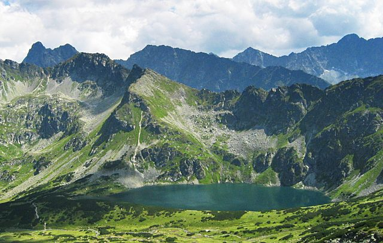

Welcome to Poland
Poland is a country in central Europe, bordered by Germany to the west, the Czech Republic and Slovakia to the south, Ukraine and Belarus to the east and, to the north, Lithuania and the Russian exclave of Kaliningrad. Poland has a long coast on the Baltic Sea and is largely dominated by low-lying rolling plains in the north. To the south, the Carpathian Mountains form a watershed and natural border with Slovakia.
Poland is in north-central Europe. Most of the country is a plain with no natural boundaries except the Carpathian Mountains in the south and the Oder and Neisse rivers in the west. Other major rivers, which are important to commerce, are the Vistula, Warta, and Bug.
Poland's sixteen administrative regions are called województwa, often abbreviated as "woj.". The word is roughly equivalent to the word "province" in English. The sixteen provinces have elected self-governments, who oversee local regional and economic policy.
Towns and Cities that you must visit
- Warsaw — capital of Poland and one of the EU's thriving new business centres; the old town, nearly completely destroyed during World War II, has been rebuilt in a style inspired by the classicist paintings of Canalletto.
- Gdańsk — formerly known as Danzig, one of the old, beautiful European cities, and rebuilt after World War 2's destruction
- Katowice — Metropolis of Upper Silesia and a cultural hub.
- Cracow — the "cultural capital" of Poland and its historical capital in the Middle Ages; its centre is filled with old churches, monuments, the largest European medieval market-place and, more recently, trendy pubs and art galleries. Its city centre is a UNESCO World Heritage Site.
- Lublin — the biggest city in Eastern Poland having a well-preserved old town with typical Polish architecture, along with unusual elements of the so-called Lublin Renaissance.
- Łódź — once renowned for its textile industries, the "Polish Manchester" has the longest walking street in Europe, Piotrkowska Street, full of picturesque 19th-century architecture.
- Poznań — the merchant city, considered to be the birthplace of the Polish nation and church (along with Gniezno) presenting a mixture of architecture from all epoques.
- Szczecin — most important city of Pomerania with an enormous harbour, monuments, old parks and museums.
- Wrocław — an old Silesian city previously known as Breslau, with great history; placed on 12 islands, it has more bridges than any other European town except Venice, Amsterdam and Hamburg